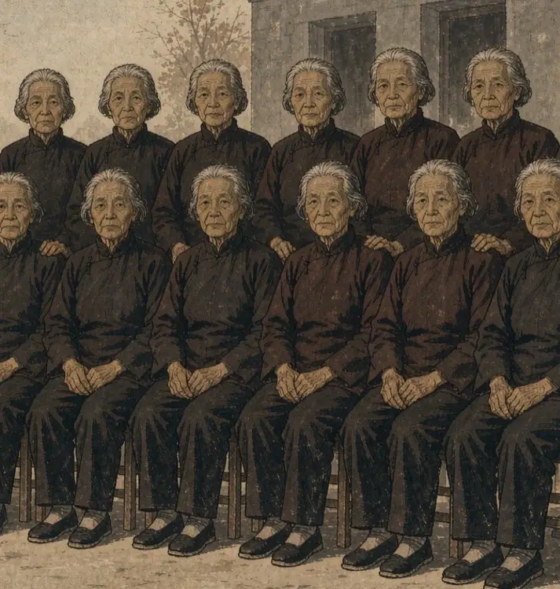
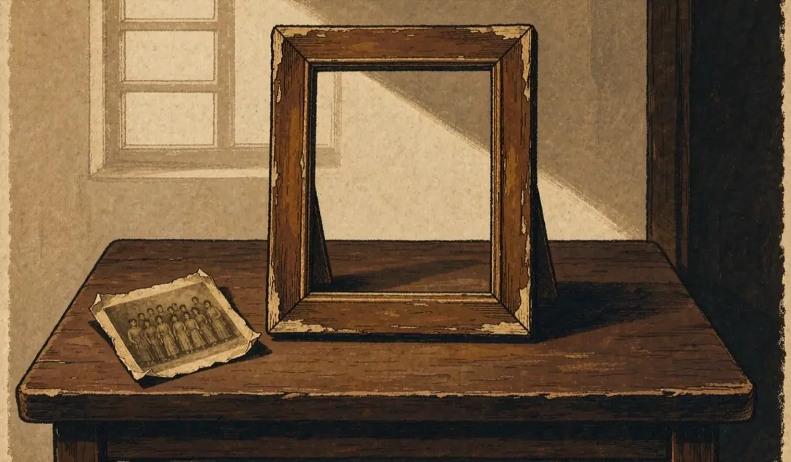
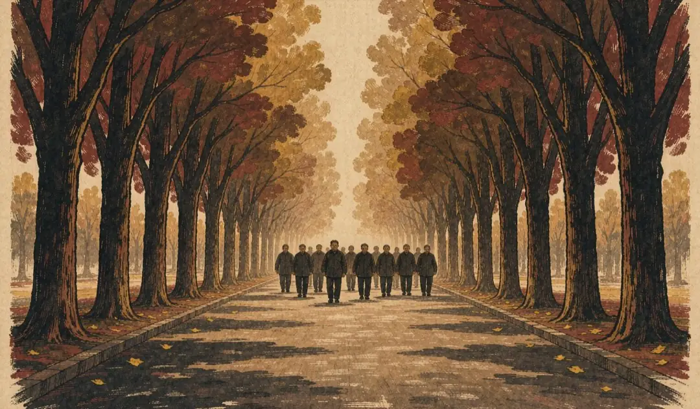

合影里空的那些位置
空相框
框不住的那些位置
1935 年 10 月，中央红军到达陕北吴起镇。
出发时的 8.6 万余人，湘江之后锐减到 3 万余人，遵义时约 3.7 万人，到吴起镇，陕甘支队只剩 7000 余人。
随中央红军出发的 30 名女红军，24 人走到了陕北。

1949 年秋，参加过长征的部分女红军在北京拍了一张合影。
第一排左起：刘英、陈琮英、戚元德、周越华、危秀英。第二排左起：邓六金、甘棠、吴仲廉、李坚真、李贞、廖似光、蔡畅。十二个人。
1955 年 9 月 27 日，中南海怀仁堂。
周恩来把少将军衔命令状颁给李贞，握着她的手说：“祝贺你，李贞同志，你是新中国第一位女将军。”她是授衔仪式上唯一的女将军。

拍照那天，摄影师喊了一声“看这里”。十二个人抬起头。
那张合影里的十二个人，后来各有各的路。有的继续工作，有的渐渐没了消息。

镜头框住的是十二张脸。框不住的，是那些本该站在她们身边、却没能来的人。
瑞金出发时名单上的 30 个名字，走到陕北的只有 24 个。纸上的字还在，人却少了 6 个。她们留在苏区，留在湘江边，留在雪山上，留在草地里。没有照片。
空相框里什么都没有。它装的是那些拍不进照片的人。
“有的女红军，牺牲时连名字也没有留下。”人民网 · 盘点 30 位参加过长征的红军女战士
本 章 完 整 原 文
第八章 空相框
1935年10月，中央红军到达陕北吴起镇。
出发时的8.6万余人，湘江之后锐减到3万余人，遵义时约3.7万人，到吴起镇，陕甘支队只剩7000余人。
随中央红军出发的30名女红军，24人走到了陕北。
1949年秋，参加过长征的部分女红军在北京拍了一张合影。第一排左起：刘英、陈琮英、戚元德、周越华、危秀英。第二排左起：邓六金、甘棠、吴仲廉、李坚真、李贞、廖似光、蔡畅。十二个人。
照片里没有贺子珍。没有康克清。没有邓颖超。没有那些留在苏区的，留在途中的，被派到红四方面军后来牺牲在祁连山下的。
1955年9月27日，中南海怀仁堂。周恩来把少将军衔命令状颁给李贞，握着她的手说：“祝贺你，李贞同志，你是新中国第一位女将军。”她是授衔仪式上唯一的女将军。
那张合影里的十二个人，后来各有各的路。有的继续工作，有的渐渐没了消息。
拍照那天，摄影师喊了一声“看这里”。十二个人抬起头。
镜头框住的是十二张脸。框不住的，是那些本该站在她们身边、却没能来的人。
瑞金出发时名单上的30个名字，走到陕北的只有24个。纸上的字还在，人却少了6个。它们留在苏区，留在湘江边，留在雪山上，留在草地里。没有照片。
空相框里什么都没有。它装的是那些拍不进照片的人。
“有的女红军，牺牲时连名字也没有留下。”——人民网《盘点30位参加过长征的红军女战士》（来源：s1）